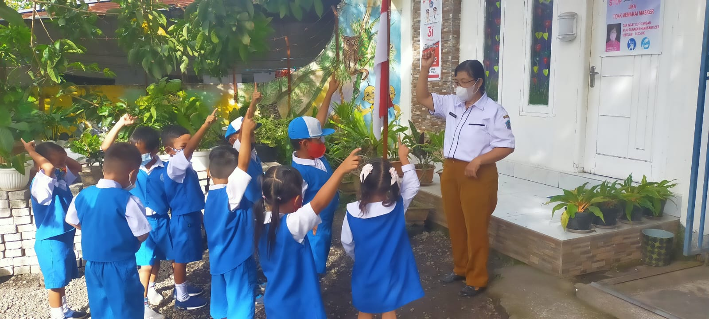
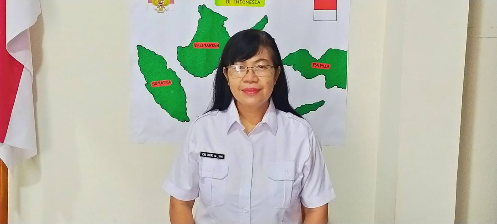
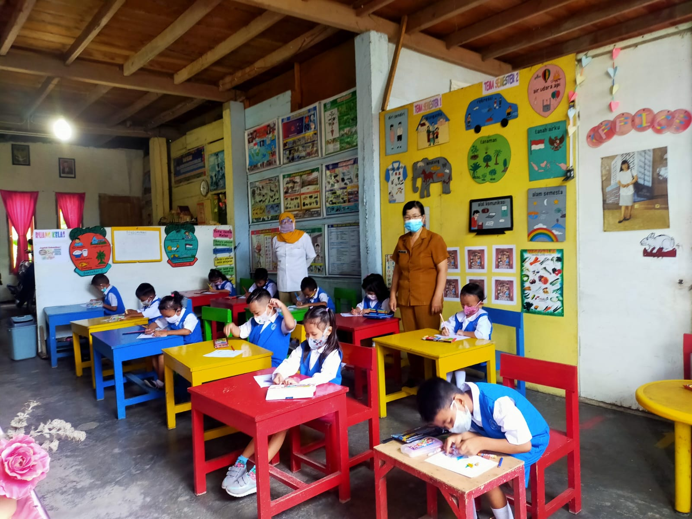
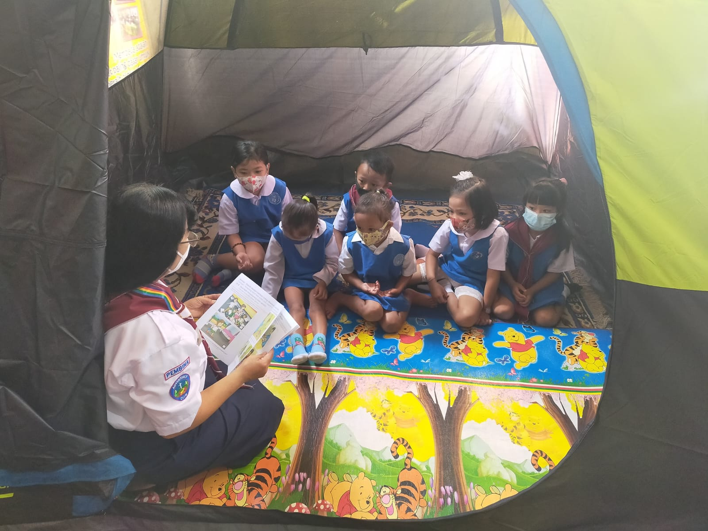
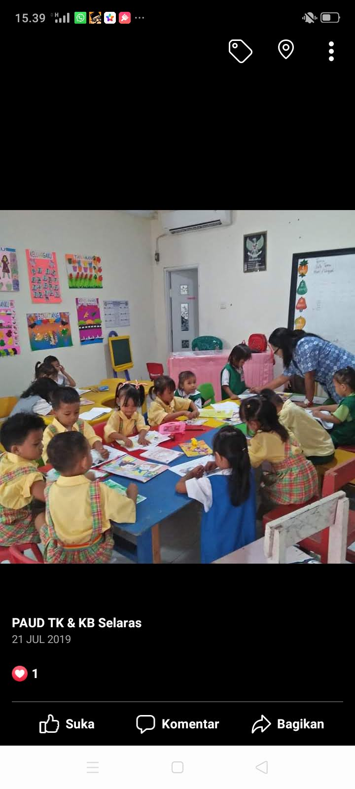
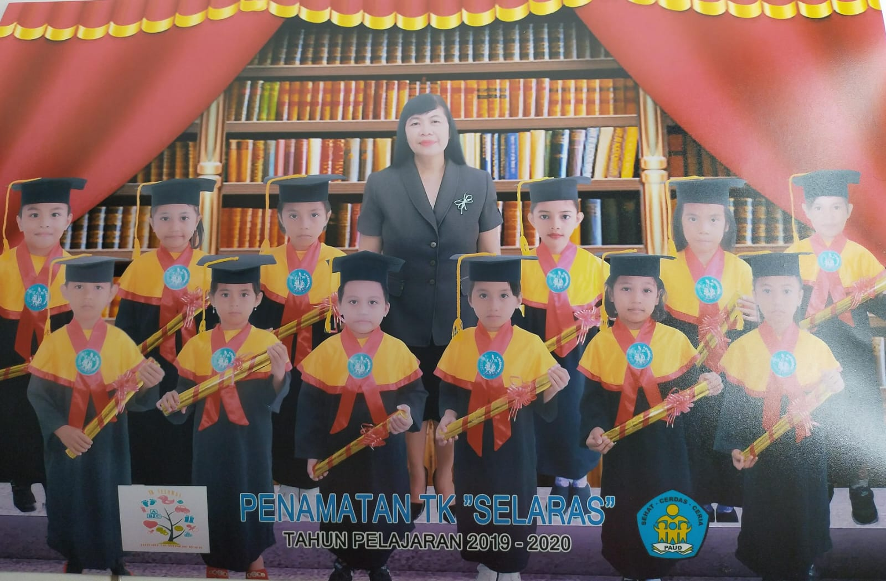
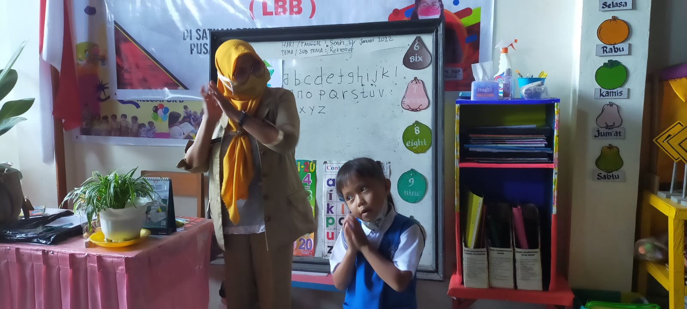

TK Selaras hadir sebagai lingkungan belajar yang menyenangkan, aman, dan penuh kasih sayang — membantu anak berkembang secara optimal sejak dini.


TK Selaras berdiri sejak 2012 dengan visi menciptakan generasi penerus yang cerdas, berkarakter, dan berbahagia. Kami percaya setiap anak adalah bintang yang menunggu untuk bersinar.
Dengan metode pembelajaran bermain sambil belajar, kami memastikan proses tumbuh kembang anak berjalan seimbang antara aspek kognitif, emosional, dan sosial.
Mengacu pada standar Kemendikbud
Perhatian personal untuk setiap anak
Area bermain terstandar keamanan
Mengembangkan ekspresi diri melalui gambar, mewarnai, kerajinan tangan, dan musik.
Memperkenalkan konsep membaca, menulis, dan berhitung secara menyenangkan.
Mengenalkan anak pada alam sekitar dan eksperimen sederhana yang menyenangkan.





Jangan lewatkan kesempatan terbaik untuk masa depan anak Anda. Tempat terbatas!